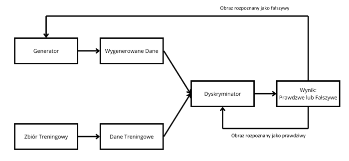
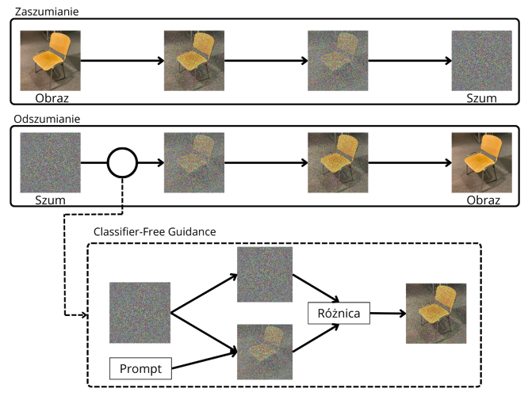

W ostatnich latach niezwykłą popularność zyskały modele
generwania obrazu. W mediach społecznościowych i przestrzeni
publicznej rozpoczęła się dyskusja na temat tego, czy
technologia ta zastąpi pracowników sektora kreatywnego
tworzących treści wizualne. Podczas gdy coraz więcej osób
zachwycało się możliwościami nowej technologii i tworzyło z
ich pomocą coraz więcej treści, wielu twórców zaczęło wyrażać
swój niepokój przed taką właśnie przyszłością.Pojawienie się
nowej technologii, zawsze wiąże się z pewnym stopniem lęku i
sceptycyzmu skierowanych w jej kierunku. W latach 2021/2022,
wraz z pojawieniem się nowych, ogólnodostępnych narzędzi
takich jak chat GPT bądź DALL-E, sztuczna inteligencja (SI) i
jej gwałtowny rozwój, stała się jednym z najgłośniejszych oraz
najbardziej kontrowersyjnych tematów poruszanych w mediach.

Generowanie obrazów rozwija się bardzo szybko
W ciągu ostatnich lat pojawiło się kilka przełomów w generowaniu obrazów które całkowicie odmieniły rynek i doprowadziły do obecnie trwającej ekscytacji generowaniem obrazów przez SISieci GAN
Opiera się na na połączeniu ze sobą dwóch, rywalizujących ze sobą sieci neuronowych. Pierwsza z nich, nazywana generatorem tworzy dane, a druga, nazywana dyskryminatorem porównuje je z zbiorem testowym. Generator odpowiada za tworzenie obrazu jak najbardziej podobnego do rzeczywistego, tak aby dyskryminator nie był wstanie go odróżnić. Zadaniem dyskryminatora jest na podstawie wcześniejszego treningu na zbiorze testowym, ocenienie czy otrzymany przez niego obraz jest prawdziwy, czy został stworzony przez generator. Obie sieci działają równolegle i trenują się wzajemnie. W przypadku kiedy dyskryminator rozpozna obraz jako fałszywy, generator modyfikuje swoje działanie próbując się udoskonalić. W odwrotnej sytuacji, kiedy generatorowi uda się go oszukać, dyskryminator modyfikuje siebie, aby lepiej klasyfikować otrzymywane obrazy. W 2018 roku obraz wygenerowany za pomocą sieci GAN został sprzedany na aukcji za 432,500$


Modele Dyfuzyjne
Stanowią większość obecnie wykorzystywanych modeli generowania obrazów. Model przyjmuje prawdziwy obraz i stopniowo dodaje do niego szum. Po określonej liczbie kroków, obraz składa się jedynie z szumu. Celem tego etapu jest nauczenie modelu zależności pomiędzy poszczególnymi krokami. Następnym etapem jest odszumianie. W tym etapie, model przyjmuje całkowicie zaszumiony obraz i próbuje z niego szum usunąć. Dzieje się to stopniowo, tak jak w przypadku zaszumiania. W każdym kroku usuwana jest pewna ilość szumu. Do sieci dodawany jest również wpisany przez użytkownika prompt. Zazwyczaj dzieje się to za pomocą metody Classifier-Free Diffusion Guidance. Metoda ta, polega na powtórzeniu tego samego kroku odszumiania dwa razy: raz z dodanym do sieci promptem użytkownika, a raz bez. Model porównuje te dwa obrazy ze sobą i sprawdza jaka jest między nimi różnica, a następnie wzmacnia różnicę między nimi. Dzięki tej metodzie, generowane obrazy są możliwie najbliższe wprowadzonemu przez użytkownika promptowi. Po odpowiedniej ilości cykli odszumiania, otrzymujemy obraz.Artyści obawiają się przyszłośći
58% grafików obawia się utraty pracy na rzecz SI
94% odczuwa lęk w stosunku do swojej przyszłości związany
z technologiami generowania obrazów
35% twierdzi, że rozwój generatywnej sztucznej
inteligencji przyniesie więcej strat niż zysków
Krytyka SI
Podczas dyskusji o modelach generowania obrazów, często krytykowane jest ich kilka aspektów:Utrata pracy
Wielu pracowników branży kreatywnej obawia się utraty pracy na rzecz sztucznej inteligencji.Aspekty prawne
Ludzie nie wiedzą czy korzystanie z sztucznej inteigencji w pracy jest zgdne z prawemPrawa autorskie
Wielu artystów sprzeciwia się trenwaniu modeli na ich pracach bez ich zgodyUtrata artyzmu
Twórcy wyrażają obawę, że rozpowszechnienie korzystania ze sztucznej inteligencjii może prowadzić do utraty jakości sztuki i wartości jakie z sobą niesieLęk przed sztuczną inteligencją ma prawdziwe konsekwencje
Na odczuwane emocje wpływa kilka czynników
Wiedza na temat sztucznej inteligencji zmniejsza odczuwany
lęk
Ludzie którzy sami korzystają z modeli SI mniej obawiają
się utraty pracy
U większości ludzi, zarówno pozytywne jak i negatywne
nastawienie do AI silnie zmienia się w czasie
Artyści zwracają jednak uwagę rówież na korzyści
Pomimo krytyki, twórcy zauważają również zalety nowej technologiiPrzyśpieszenie pracy
Sztuczna inteligencja może wykonywać proste czynności, znacznie przyśpieszając pracę
Inspiracja
Dzięki sztucznej inteligencji można bardzo szybko tworzyć
grafiki poglądowe
Niższy próg wejścia
Sztuczna inteligencja może zwiększyć istotność kreatywności względem zdolności technicznych wśród grafikówCzego oczekują artyści?
Twórcy mają konkretne oczekiwania w stosunku do przyszłości SI
Wiedza
Pracownicy oczekują dostępu do najnowższych technologii w
swojej pracy, oraz szkoleń z korzystania z niej, aby móc
być na bierząco z szybko rozwijającą się sztuczną
inteligencją
Regulacja
Twórcy domagają się prawnej regulacji sztucznej
inteligencji oraz konkretnych zasad korzystania z niej w
swoim miejscu pracy.